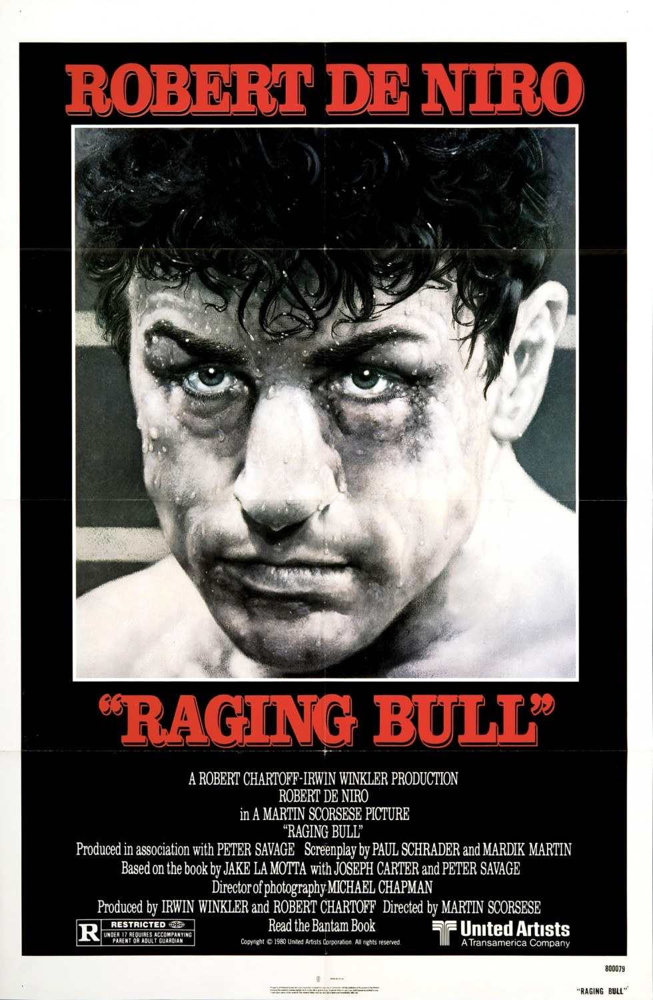

Fiche technique

Synopsis
Bronx, années 1940. Jake LaMotta, boxeur poids moyen d'origine italienne, cogne — sur le ring, où sa résistance à la douleur devient légendaire, et en dehors, où sa jalousie maladive détruit méthodiquement tout ce qu'il aime. Managé par son frère Joey, marié à la très jeune Vickie qu'il soupçonne sans relâche, LaMotta accepte de se coucher pour la mafia afin d'obtenir sa chance mondiale, devient champion du monde en 1949 — puis perd tout : le titre, sa femme, son frère, sa liberté[1].
Le film le retrouve en 1964, bouffi et vieilli, récitant des monologues dans un cabaret new-yorkais — dont, face au miroir de sa loge, la tirade du taxi d'On the Waterfront : « I coulda been a contender. »[4]
Contexte de production
C'est Robert De Niro qui porte le projet à bout de bras : il découvre les mémoires de LaMotta (Raging Bull: My Story, 1970) et harcèle littéralement Scorsese, que la boxe n'intéresse pas. Le tournant est dramatique : en 1978, après l'échec de New York, New York, Scorsese s'effondre — quatre jours d'hôpital entre la vie et la mort. De Niro lui rend visite et lui repose la question ; Scorsese dit oui, et fera du film le récit de sa propre remontée[4]. Il aborde le tournage comme si c'était son dernier :
« Plutôt que de compromettre cette histoire pour pouvoir faire dix autres films ensuite, je préférais la finir et ne plus jamais tourner après ça. » Martin Scorsese, cité par Cinephilia & Beyond[4]
Le scénario de Mardik Martin est réécrit par Paul Schrader à l'été 1978, puis retravaillé sans crédit par Scorsese et De Niro pendant deux semaines et demie à Saint-Martin[1]. Le choix du noir et blanc naît notamment d'une remarque de Michael Powell — les gants rouges de De Niro juraient avec la mémoire des actualités filmées des années 1940 — et de l'inquiétude des cinéastes sur la dégradation des pellicules couleur[4]. Reste la transformation la plus célèbre de l'histoire de l'acting : De Niro prend une trentaine de kilos (de 66 à 98 kg environ), le tournage s'interrompant près de quatre mois pour lui laisser le temps de manger sa route à travers l'Italie du Nord et la France[1]. Budget final : 18 millions de dollars, qu'United Artists faillit refuser de distribuer tant le film lui semblait brutal[1].
Structure narrative
Le film est enchâssé dans son propre épilogue : il s'ouvre en 1964 sur le LaMotta épaissi du cabaret, avant de remonter à 1941 — si bien que toute l'ascension est déjà lestée de sa chute. À l'intérieur de ce cadre, la construction alterne blocs domestiques (cuisines, chambres, télévision) et combats datés comme des chapitres, chronique sèche d'une carrière qui est aussi le calendrier d'une autodestruction[1].
Scorsese refuse la dramaturgie sportive classique : pas de montée vers LA victoire, pas de revanche finale. Le titre mondial arrive aux deux tiers du film, presque sans joie, et la défaite décisive contre Robinson est acceptée avec une fierté perverse — « tu ne m'as jamais mis au tapis, Ray ». Le vrai combat, celui que le montage de Thelma Schoonmaker ne cesse de relancer, se joue dans les appartements : c'est là que les rounds font le plus mal[3].
Mise en scène et procédés techniques
Les scènes de ring — neuf combats, une dizaine de minutes au total — ont redéfini la représentation de la boxe au cinéma. Scorsese place la caméra dans le ring, à hauteur de coups, et storyboarde chaque impact « comme on règle une danse sur une musique » ; chaque combat reçoit un traitement visuel distinct, jusqu'à l'abstraction expressionniste du dernier face-à-face avec Sugar Ray Robinson — fumées, flashes, ralentis, géométrie déformée du ring[4]. Le monteur son Frank Warner fabrique un son unique pour chaque coup de poing — puis détruira sa sonothèque après le film[4]. La critique française a immédiatement identifié le programme : noir et blanc très contrasté, focales courtes légèrement déformantes, ralentis, sons exacerbés — une subjectivité maximale qui fait éprouver les combats depuis l'intérieur du crâne de LaMotta[5].
Face à cette fureur, l'intermezzo de Cavalleria rusticana de Mascagni, choisi par Scorsese dans sa propre discothèque, drape le générique et les ralentis d'une mélancolie liturgique — l'opéra sicilien répondant à la tragédie italo-américaine[1]. Et le noir et blanc de Michael Chapman fait le reste : il stylise le sang (une éponge essorée au-dessus des cordes), transforme les corps en statuaire et inscrit le film dans la mémoire documentaire des années 1940[4][5].
Personnages principaux
Jake LaMotta (Robert De Niro, Oscar du meilleur acteur) est un protagoniste sans excuse psychologisante : le film ne l'explique pas, il l'expose. Sa jalousie n'est pas un défaut de caractère mais un régime de perception — chaque regard de Vickie, chaque politesse de Joey devient pièce à conviction. De Niro joue les deux corps de LaMotta, l'athlète et l'épave, et c'est la continuité entre les deux qui glace : le second était déjà contenu dans le premier[1][2].
Joey (Joe Pesci, première collaboration avec Scorsese et De Niro) est le frère-manager, seul lien de Jake avec le monde rationnel — jusqu'à la scène atroce où la question « tu as couché avec ma femme ? » pulvérise la fratrie. Vickie (Cathy Moriarty, 19 ans à la sortie) est filmée comme Jake la voit : icône platine inaccessible au bord des piscines, puis prisonnière d'un mariage de coups et de soupçons — le film épouse ce regard pour mieux le dénoncer[1][5].
Thèmes
La jalousie, d'abord — non comme ressort d'intrigue mais comme pathologie filmée de l'intérieur, cousine paranoïaque de celle d'Othello. Elle est indissociable du deuxième thème : une masculinité qui ne connaît que deux idiomes, cogner et posséder. Le film radiographie un imaginaire viril où puissance physique et identité se confondent, et où toute tendresse est vécue comme une menace[5].
Vient ensuite le corps comme monnaie : LaMotta encaisse sur le ring les punitions qu'il s'estime dues — la critique a souvent lu ses combats comme des autoflagellations, la scène de la cellule de Miami (« I'm not an animal ») en étant l'aveu nu. La grille catholique de Scorsese affleure partout : faute, châtiment, et cette rédemption minimale du miroir final — certains critiques français s'agacèrent d'ailleurs de cette lecture religieuse, tel Bernard Nave dans Jeune Cinéma, « permis de rester sceptique devant cette vision »[3]. Le carton final — la citation de l'Évangile selon saint Jean sur l'aveugle guéri (« j'étais aveugle, maintenant je vois ») — assume explicitement cette dimension[1].
Réception critique et postérité
À sa sortie américaine (première le 14 novembre 1980), l'accueil est polarisé — la violence du film divise, le box-office est tiède (23,4 M$ pour 18 M$ de budget). Les Los Angeles Film Critics le sacrent pourtant meilleur film de l'année, et l'Académie lui accorde huit nominations pour deux statuettes : De Niro, et le montage de Thelma Schoonmaker — mais Des gens comme les autres de Robert Redford rafle le meilleur film[1][2].
La presse française, à la sortie du 25 février 1981, est nettement plus unanime : L'Humanité salue « une sorte d'autopsie, par la fiction et la mise en scène », Les Échos « un film curieusement très réaliste et qui pourtant prend des allures de fable », et Robert Benayoun célèbre dans Le Point un De Niro « acteur absolu, prêt à toutes les métamorphoses »[3]. La postérité a tranché au-delà de toute espérance : premier film inscrit au National Film Registry dès sa première année d'éligibilité (1990), 4e meilleur film américain de tous les temps au classement AFI de 2007, et une place à peu près permanente dans les listes des plus grands films jamais tournés[1].
Conclusion
Raging Bull est peut-être le plus grand contre-emploi de l'histoire du film de sport : un film de boxe qui méprise la victoire, un biopic qui refuse d'aimer son sujet, une performance physique record mise au service d'un personnage indéfendable. Sa puissance vient exactement de là — de ce que Scorsese, se croyant fini, n'avait plus rien à négocier : ni la complaisance du genre, ni la sympathie du public, ni la couleur.
Reste l'image finale : un homme seul face à son miroir, répétant les répliques d'un autre film sur un autre raté magnifique. LaMotta n'y comprend probablement rien ; le film, lui, a tout compris — que la boxe n'était qu'un prétexte, et que le véritable adversaire, round après round, cuisine après cuisine, n'a jamais cessé d'être le reflet. Le cinéma américain des années 1980 s'ouvre sur ce constat sans appel, en noir, blanc et culpabilité.
Sources
- Wikipédia (en) — « Raging Bull » : production (réécriture Schrader, prise de poids de De Niro, interruption de tournage, budget, United Artists), musique (Mascagni), sorties, Oscars, réception initiale et postérité (National Film Registry 1990, AFI 2007). en.wikipedia.org/wiki/Raging_Bull
- IMDb — « Raging Bull (1980) » : distribution, récompenses (consulté via recherche web). imdb.com/title/tt0081398
- La Cinémathèque française — « Revue de presse de Raging Bull » : sortie française du 25 février 1981, citations de L'Humanité, Les Échos, Le Point (Robert Benayoun), Jeune Cinéma (Bernard Nave), etc. cinematheque.fr/article/720.html
- Cinephilia & Beyond — « Scorsese On the Ropes: The "Kamikaze" Film-Making of Raging Bull » : effondrement de 1978 et rôle de De Niro, citation « kamikaze », conception des combats (caméra dans le ring, storyboards), son de Frank Warner, remarque de Michael Powell sur le noir et blanc, scène finale d'On the Waterfront. cinephiliabeyond.org/raging-bull
- LeMagduCine — « Rétrospective Martin Scorsese : Raging Bull » et critiques françaises associées (noir et blanc contrasté, focales courtes, subjectivité, lecture de la masculinité), consultées via recherche web. lemagducine.fr